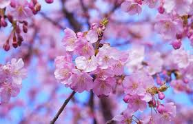
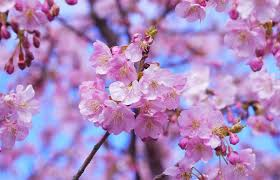
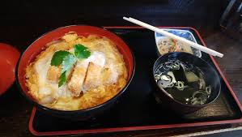
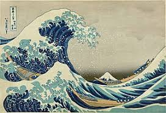

tradiciones japonesas
Una de las tradiciones más conocidas de Japón es el Hanami, que consiste en la observación de los cerezos en flor. Además, el Teatro Kabuki, el Ikebana (arte floral) y la ceremonia del té son parte importante de su cultura.
esplora la riquesa de esta cultura
La cultura de Japón es el resultado de un proceso histórico que comenzó con las olas inmigratorias originarias del continente asiático y de las islas del océano Pacífico, seguido por una fuerte influencia cultural proveniente de China. Posteriormente, el shogunato Tokugawa instauró a mediados del siglo XVII un largo periodo de aislamiento con el resto del mundo (sakoku) que se prolongó hasta el comienzo de la Era Meiji, a finales del siglo XIX, cuando recibió una inmensa influencia extranjera que se acrecentó tras el fin de la Segunda Guerra Mundial. Esto en efecto dio como resultado una cultura distinta a otras culturas asiáticas
Una de las tradiciones más conocidas de Japón es el Hanami, que consiste en la observación de los cerezos en flor. Además, el Teatro Kabuki, el Ikebana (arte floral) y la ceremonia del té son parte importante de su cultura.
La gastronomía japonesa posee un largo pasado culinario que se ha desarrollado en una gastronomía sofisticada, refinada y especializada para cada estación. Es similar a la gastronomía china con respecto a los alimentos básicos o shushoku (主食), que están basados en cinco alimentos ricos en carbohidratos (五穀: 米, 麦, 粟, 豆, 黍 o 稗): arroz, trigo y avena (plantas del género Setaria), y frijol y mijo común (plantas del género Echinocloa). Los platos, conocidos como okazu (おかず), tienen la función de dar sabor a la comida principal, y por lo general son salados. Una comida japonesa estándar siempre consiste de una taza de arroz japonés (gohan) como shushoku, y de acompañamiento tsukemono (encurtido), que es una taza de sopa y una variedad de platos okazu como pescado, carne, vegetales, etc.
El arte japonés abarca muchas formas, desde la pintura tradicional, como las ukiyo-e , hasta la arquitectura moderna y la influencia cultural en el cine y la literatura.
